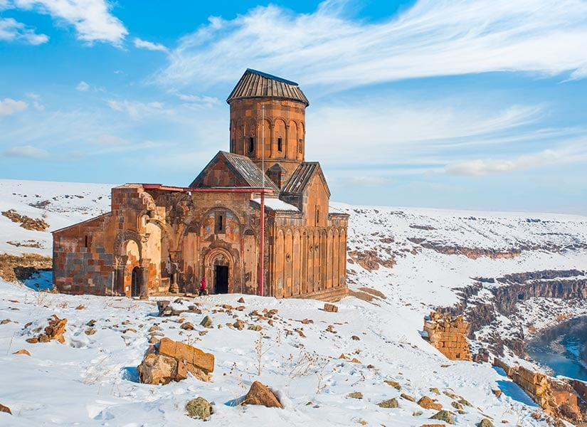
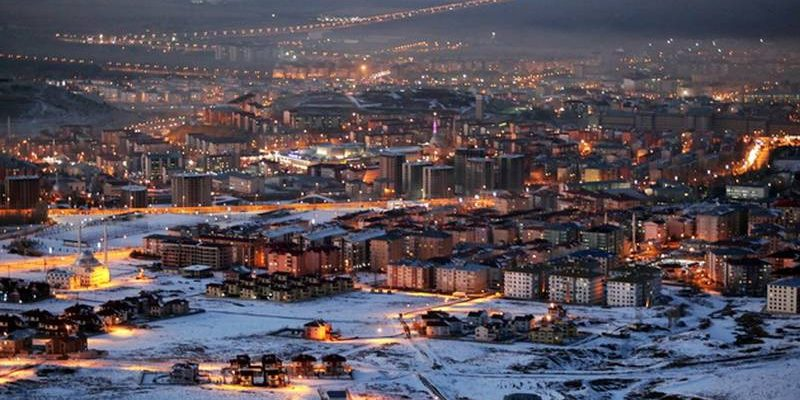
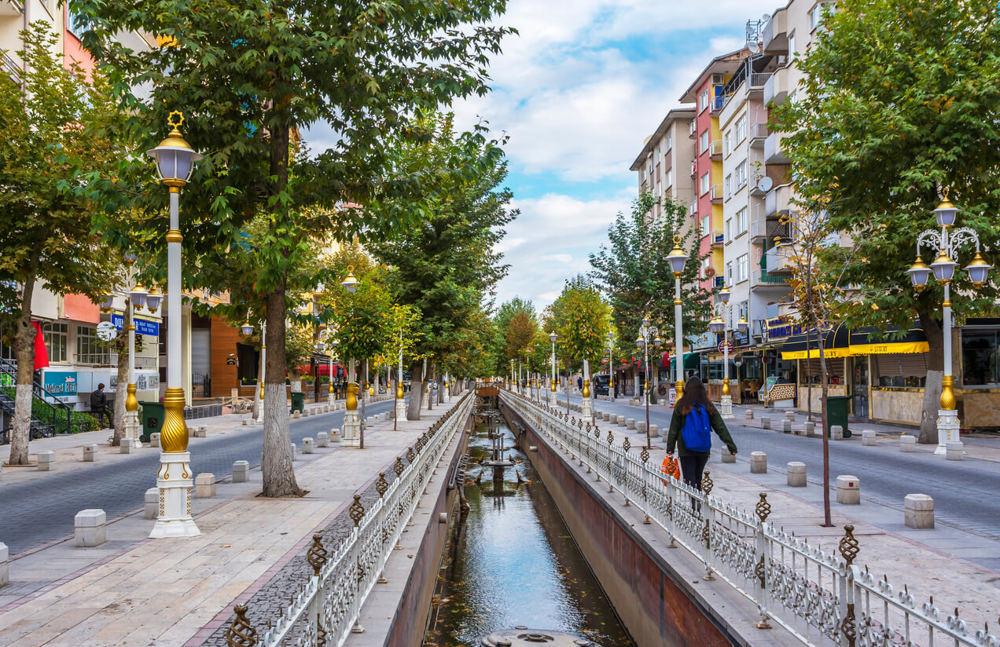
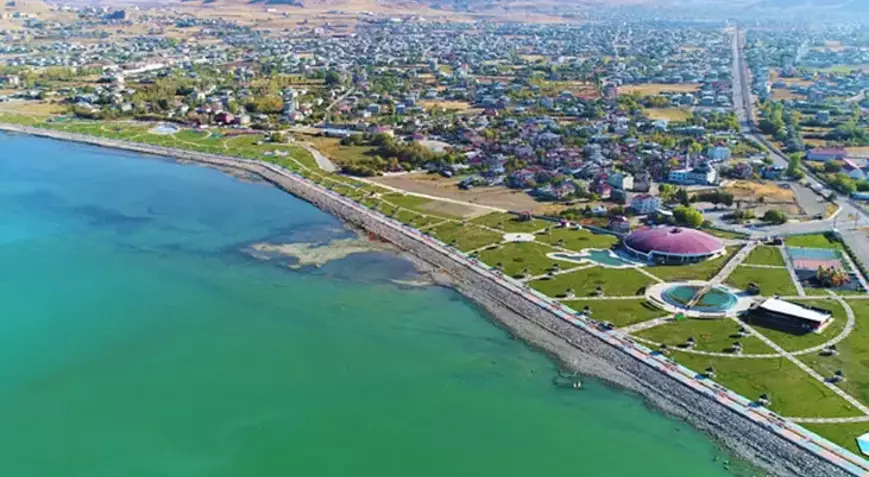
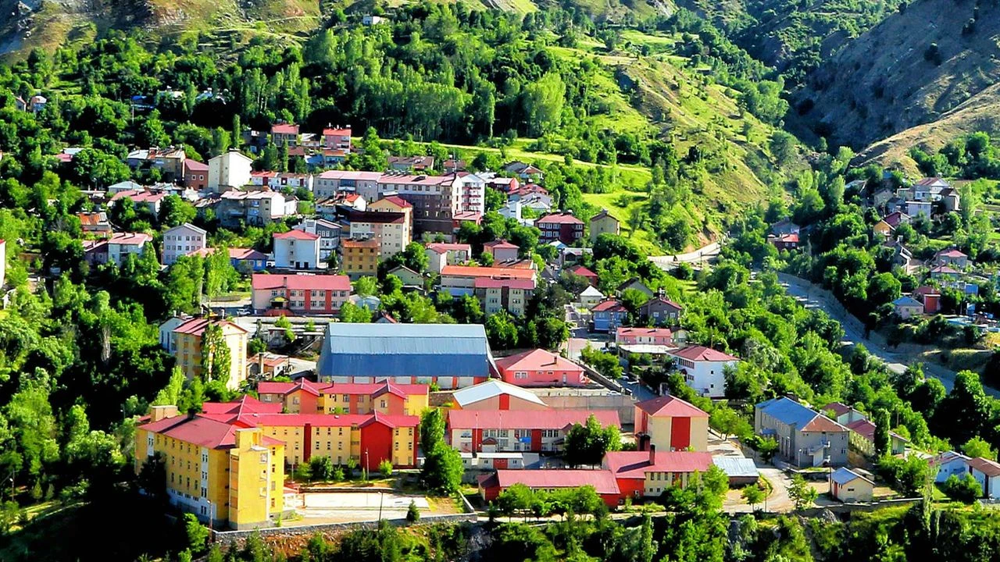
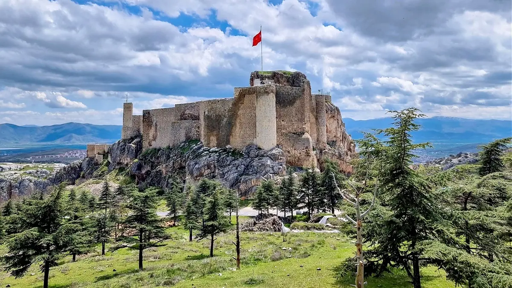
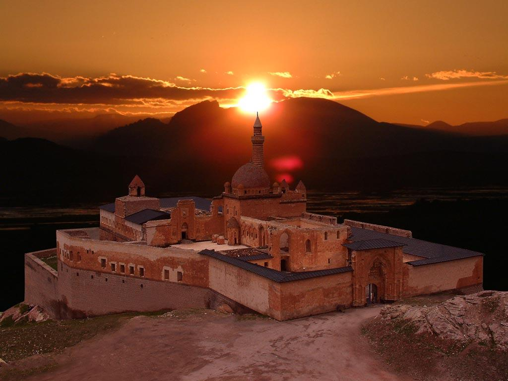
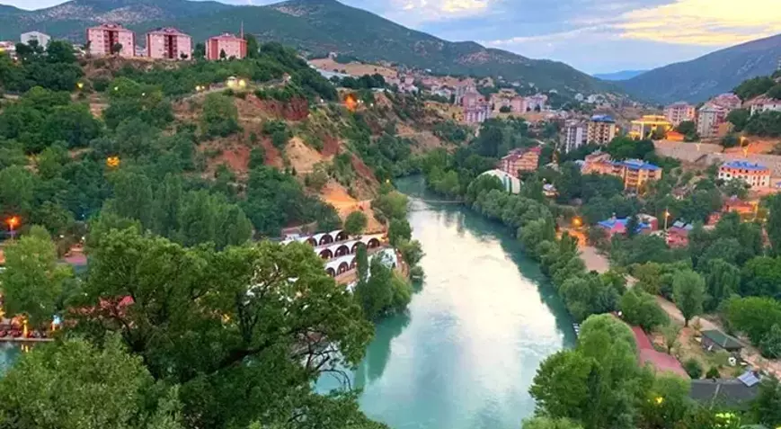
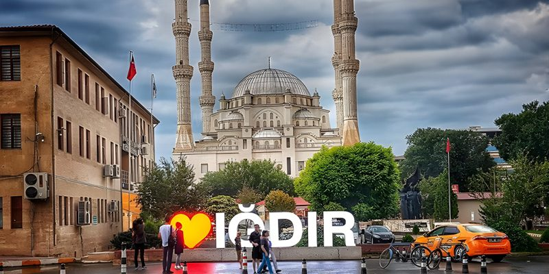

Tarihi Ani Harabeleri ve Sarıkamış kayak merkezi ile öne çıkan sınır şehridir.

Palandöken kayak merkezi, tarihi medreseleri ve soğuk iklimiyle bilinir.

Dünyaca ünlü kayısısıyla bilinen şehir; kültürel mirasları da oldukça zengindir.

Van Gölü, Akdamar Adası ve kedileriyle ünlü tarihi ve doğal güzellikler şehridir.

Nemrut Krater Gölü ve kaleleriyle doğa ile tarihin iç içe geçtiği bir yerdir.

Harput Kalesi ve Hazar Gölü ile hem kültürel hem de doğal cazibe merkezidir.

Ağrı Dağı ve İshak Paşa Sarayı ile Türkiye'nin en yüksek noktalarından biridir.

Munzur Vadisi ve doğal yaşam alanlarıyla huzur dolu bir doğa kentidir.

Türkiye’nin en doğusunda yer alır; verimli ovası ve dağ manzaralarıyla bilinir.